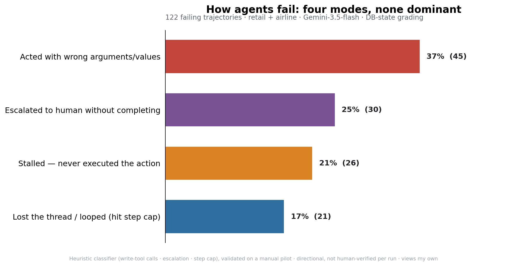

When we picture an AI agent failing, we picture it not knowing the answer. When you actually read the failing runs, that's almost never what happened.
Reading the failures, not just counting them
The first two notes showed that agents are far less reliable than their accuracy suggests, and that most failures are intermittent — right on some runs, wrong on others. This note answers the obvious next question: when an agent fails, how does it fail?
Method: I took the tasks where a frontier model (running as a customer-service agent on τ-bench retail and airline) failed, re-ran them with full transcripts, and classified each failing run from what it actually did — which tools it called, whether it ever executed the action, and how it ended. 122 failing runs in all.
Four failure modes — and none dominates

- Acted with wrong arguments / values — 37%. The agent called the right tool with wrong inputs: a miscalculated refund amount, the wrong item or reservation ID. The plan was right; the execution wasn't.
- Escalated to a human without completing — 25%. To be clear, escalating is exactly right when a task is genuinely out of scope or needs human judgment — that's good design. But these tasks were solvable with the tools the agent had, and the grader marked them incomplete. So this is premature hand-off — a safe-looking failure that quietly defeats the point of automation.
- Stalled — never executed the action — 21%. The agent gathered every detail, often computed the exact change required — then ended the conversation without ever calling the tool that does it.
- Lost the thread / looped — 17%. The agent went in circles and ran out of steps before finishing.
What's missing from the list
What's not here matters as much as what is. None of the dominant modes is "didn't understand the task." The agent almost always knew what was being asked and what to do about it. It broke on execution — committing the action, getting the arguments right, and recognizing when the job was done.
That reframes the fix. Execution failures aren't a property of the model's raw intelligence — they're a property of the system wrapped around it: the prompt, the control flow, the stopping logic, the guardrails. Which means a large share of these failures can be addressed without waiting for a bigger model — by building the agent better.
The question before putting an agent in front of customers isn't only "is the model capable enough?" It's "is the agent built to finish what it starts?"
The evidence
| Failure mode | Count | Share |
|---|---|---|
| Acted with wrong arguments / values | 45 | 37% |
| Escalated to human without completing | 30 | 25% |
| Stalled — never executed the action | 26 | 21% |
| Lost the thread / looped (step cap) | 21 | 17% |
| Total failing trajectories | 122 | 100% |
How each run was classified
A transparent heuristic on the transcript: hit the step cap → looped; escalated with no action taken → premature escalation; called a write tool but wrong end-state → wrong arguments; otherwise → stalled. Validated against a hand-read pilot. Code: classify_failures.py.
Honest caveats
- One model (Gemini-3.5-flash), two domains (retail + airline). Telecom excluded — its failures still hit the step cap, which would distort the "looped" bucket.
- The classifier is a heuristic, validated on a manual pilot — not human-verified on every trajectory.
- 122 failing runs come from just 34 distinct tasks (up to 5 runs each), so they're highly correlated — read these as directional shares, not independent samples.
- Database-state grading: a "stall" assumes the unexecuted action was actually required.
Reproduce it
git clone https://github.com/tanwargenairesearch/agent-reliability-probe
python results/classify_failures.py runs/transcripts_tax runs/transcripts_airline_g60Next: can a better agent design move these numbers — same model, different scaffolding? That's the one I'm most curious about.